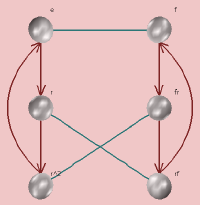
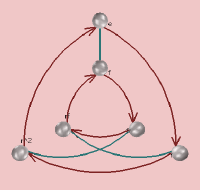
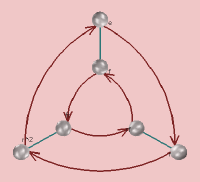
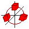
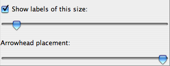

This page documents the interface for the large view of a Cayley diagram. A Cayley diagram is one of Group Explorer's four visualizers, all of which can appear either in help windows, sheets, or in their own windows. When they appear in their own windows, this is refered to as a "large view," and you can read about it in general here. This page concentrates specifically on the differences between a large view for Cayley diagram, as compared to the other visualizers.
There are two types of Cayley diagrams available in Group Explorer, the kind you instruct Group Explorer to construct for you and the kind that was designed in advance by the author of the group file. Most group files do not come with diagrams defined by the author, but Group Explorer can construct Cayley diagrams for any group, so no group will be without a diagram.
The top of the Diagram tab (the third of the three tabs in the right hand pane) allows you to choose a diagram from a drop-down list. The items in the list are one of two types.
A Cayley diagram (unlike multiplication tables and cycle graphs) is a three-dimensional structure. Thus you can click and drag on the view to rotate it in three-dimensional space. This lets you see all sides of the diagram, and seeing it in motion can give you a better mental picture of it.
Note that because Cayley diagrams are three-dimensional, the note on graphics hardware acceleration applies.
You can customize the appearance of any Cayley diagram by dragging the nodes in it around in three dimensions to any position you like. To drag the nodes around, hold the shift key while you click on the node and drag. It will move in the plane parallel to the screen. If you don't like the position to which you've moved a node, feel free to Undo your action.
your action.
Note that because chunking depends on the positions of nodes in the diagram, if you reposition the nodes in this way you will not be able to chunk cosets without allowing Group Explorer to put the nodes back to their original position.
You can customize the degree to which the arcs and arrows in the diagram are curved. Usually an arc in the diagram takes a straight path from its source node to its destination node. The exceptions to this are when the diagram is inherently round, and so the arrows follow the curvature of the diagram, or when there are nodes in the way and a curved path would avoid them.
However you can feel free to improve on Group Explorer's decisions in this matter by clicking on an arc in the diagram while holding down the shift key, and dragging to increase or decrease the amount of arcing it has. You will not be able to change the direction of the arcing, only its amount.
 |
Note that the controls panel for Cayley diagram large views has three tabs at the top: Subsets, View, and Diagram. The Subsets tab allows you to compute and highlight subsets of the group, and the View tab allows you to change some cosmetic options of the diagram; see below for information on each of these tabs. The Diagram tab allows you to choose a predefined diagram to view, or specify parameters for how Group Explorer should construct a diagram for you. This section describes the controls on the Diagram tab. |
The most common way a user reorganizes a diagram is to focus on a particular subgroup. Group Explorer therefore has a shortcut for this purpose, to alleviate wading through the technical options documented below. Right-clicking anywhere in the generator table (command-clicking on Macintosh) brings up a menu, the last item of which is "Organize by." Choosing that option lists all the subgroups by which one can organize the Cayley diagram. Selecting one reorganizes the entire generator table (and therefore the diagram) to bring together the elements in the subgroup and in each of its cosets. Further tweaking of the axes assigned to each generator may be necessary to get the diagram to look exactly the way you like, but this shortcut can save a lot of time.
It is particularly useful in examining whether a subgroup is normal. When the diagram is organized by the subgroup and its cosets, is it clear that the arrows for generators that connect one coset to another agree on where each coset should be mapped?
The generation of a diagram is accomplished by Group Explorer taking into account three factors--a list of generators for the group, an axis for each generator, and an order for nesting those axes. Each of these options is specified in the table titled "Generate diagram this way:" in the image above. Let us consider each of these options here.
A list of generators for the group
The leftmost column in the table lists generators for the group. The order is significant when the group is nonabelian. You can select new generators by right-clicking (command-clicking on Macintosh) on a generator and selecting a new one from the list. When you are choosing generator n, only the elements not in the subgroup generated by generators 1 through n-1 are available as options. You can reorder the generators in the table by control-clicking (command-clicking) a row header (numbered 1, 2, ...) and dragging it up or down.
The first step Group Explorer peforms (invisibly) when generating a Cayley diagram is to create the grid of elements without assigning them positions in space. Generators that are higher in the table have local significance, and those that are lower in the table have global significance. For instance, here is a comparison of two different choices of generators for the group S3. (Note that rf = fr2 and fr = r2f, and we assume right multiplication in both cases.)
Using generators r and f (in that order) Using generators f and r (in that order) Creates an internal table which looks like
e r r2 f fr fr2 Creates an internal table which looks like
e f r rf r2 r2f Which in turn creates a diagram which looks like either of the following two, depending on the axes chosen


Which in turn creates a diagram which looks like either of the following two, depending on the axes chosen

An axis for each generator
The second column in the table shows axes graphically, one for each generator. These determine how the tables of elements discussed above will be laid out in space. In the upper diagram of each pair above, the generator r was assigned the axis
Linear in y and the generator f was assigned the axis
Linear in x; you can see how the r arrows move vertically and the f arrows move horizontally, respecting this setting. In the lower diagram of each pair above, the generator r was assigned the axis  Rotated in x,y and the generator f was assigned the axis
An order for nesting the axes
Even having chosen all of the above options does not completely determine how the diagram should be laid out in space. For instance, in the round diagrams above the user chose one linear axis and one rotational axis. How did Group Explorer know to make it a ring of lines as opposed to a line of rings? The answer is that the f generator was marked "inside" and the r generator was marked "outside" in the order column.
A ring of lines A line of rings Note: If the order is changed from the default (which has the innermost generator on top, down to the outermost on bottom) then chunking will be disabled. The reason for this is that with some more complex groups, if the order of generation does not match the order of nesting of the axes, chunks could take on complex shapes that would need to twist to avoid one another, etc. See Chunking, below.
You can put into a Cayley diagram a different colored set of arrows for any element in the group except the identity. You can put as many or as few arrows in the diagram as you like, and Group Explorer automatically colors them with hues as far apart in the spectrum as it can (given how many different types of arrows you require).
Custom Cayley diagrams come with their own lists of default arrows, but you can still add or remove them after you have called up the custom diagram. Auto-generated diagrams, by default, use one type of arrow for each generator in the table at the top of the Diagram tab; again, add and remove as you like.
You can also choose whether arrows indicate right multiplication by a generator, or left multiplication. By default, Group Explorer assumes right multiplication, and the predefined Cayley diagrams shipped with Group Explorer use right multiplication; they will not look good if the arrows mean left multiplication.
You can also control the placement of arrowheads from the View tab (see below).

To choose what subgroup's cosets should be chunked, simply choose the subgroup from the drop-down list at the bottom of the Diagram tab. Note that what subgroups are available is determined by the structure of the diagram, which is determined by the order of generators. If the generators are a, b, c, and d (in that order) then the only cosets available for chunking will be
Note also that chunking is disabled when the order of generation of the diagram does not match the order of nesting of the axes; more information above.
The controls in the Subsets tab on the right side of the large window for Cayley diagrams are described in the help page for subset controls.
The controls in the View tab on the right side of the large window for Cayley diagrams are described in the help page for three-dimensional controls, with the exception of two controls specific to Cayley diagrams.
The 3D controls shown to the right are specific to Cayley diagrams. Use the checkbox next to the phrase "Show labels of this size:" to turn on or off the text next to each node in the diagram, which labels the node with the name of the element which it represents. |
 |
The slider beneath the phrase "Show labels of this size:" decides the size of the font used in the labels. Moving the slider to the left gives small fonts, and to the right large fonts. You can control the placement of arrowheads along arcs in the diagram by dragging the "Arrowhead placement" slider. When it is at its right extent, arrowheads are abutted against the destination node of the arc; when it is at its left extent, they are near the source node. |
|
Quick help links:
Contents | Getting Started | Tutorials | User Manual | Miscellaneous Reference
GE terminology | Help on help